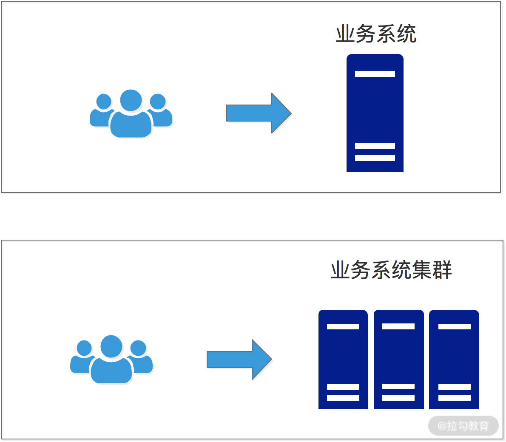
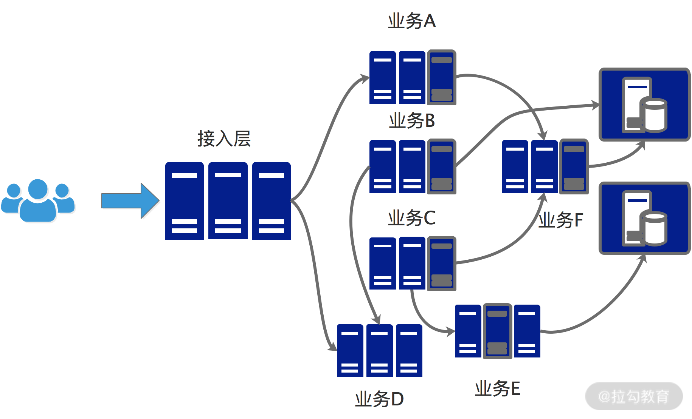
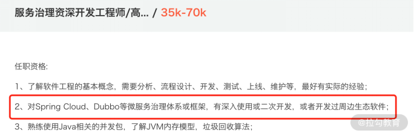
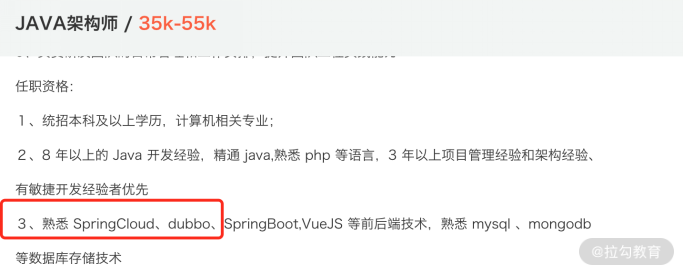
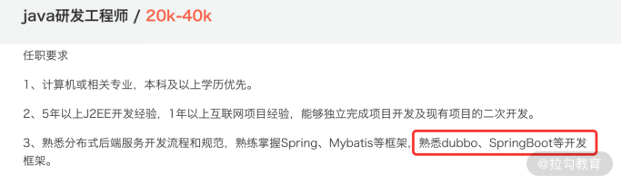
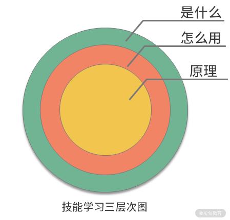
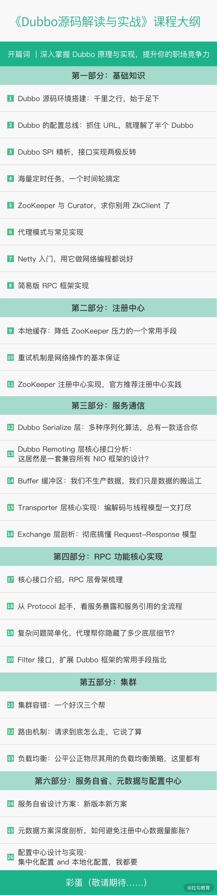

- 00 开篇词 深入掌握 Dubbo 原理与实现，提升你的职场竞争力.md.html
- 01 Dubbo 源码环境搭建：千里之行，始于足下.md.html
- 02 Dubbo 的配置总线：抓住 URL，就理解了半个 Dubbo.md.html
- 03 Dubbo SPI 精析，接口实现两极反转（上）.md.html
- 04 Dubbo SPI 精析，接口实现两极反转（下）.md.html
- 05 海量定时任务，一个时间轮搞定.md.html
- 06 ZooKeeper 与 Curator，求你别用 ZkClient 了（上）.md.html
- 07 ZooKeeper 与 Curator，求你别用 ZkClient 了（下）.md.html
- 08 代理模式与常见实现.md.html
- 09 Netty 入门，用它做网络编程都说好（上）.md.html
- 10 Netty 入门，用它做网络编程都说好（下）.md.html
- 11 简易版 RPC 框架实现（上）.md.html
- 12 简易版 RPC 框架实现（下）.md.html
- 13 本地缓存：降低 ZooKeeper 压力的一个常用手段.md.html
- 14 重试机制是网络操作的基本保证.md.html
- 15 ZooKeeper 注册中心实现，官方推荐注册中心实践.md.html
- 16 Dubbo Serialize 层：多种序列化算法，总有一款适合你.md.html
- 17 Dubbo Remoting 层核心接口分析：这居然是一套兼容所有 NIO 框架的设计？.md.html
- 18 Buffer 缓冲区：我们不生产数据，我们只是数据的搬运工.md.html
- 19 Transporter 层核心实现：编解码与线程模型一文打尽（上）.md.html
- 20 Transporter 层核心实现：编解码与线程模型一文打尽（下）.md.html
- 21 Exchange 层剖析：彻底搞懂 Request-Response 模型（上）.md.html
- 22 Exchange 层剖析：彻底搞懂 Request-Response 模型（下）.md.html
- 23 核心接口介绍，RPC 层骨架梳理.md.html
- 24 从 Protocol 起手，看服务暴露和服务引用的全流程（上）.md.html
- 25 从 Protocol 起手，看服务暴露和服务引用的全流程（下）.md.html
- 26 加餐：直击 Dubbo “心脏”，带你一起探秘 Invoker（上）.md.html
- 27 加餐：直击 Dubbo “心脏”，带你一起探秘 Invoker（下）.md.html
- 28 复杂问题简单化，代理帮你隐藏了多少底层细节？.md.html
- 29 加餐：HTTP 协议 + JSON-RPC，Dubbo 跨语言就是如此简单.md.html
- 30 Filter 接口，扩展 Dubbo 框架的常用手段指北.md.html
- 31 加餐：深潜 Directory 实现，探秘服务目录玄机.md.html
- 32 路由机制：请求到底怎么走，它说了算（上）.md.html
- 33 路由机制：请求到底怎么走，它说了算（下）.md.html
- 34 加餐：初探 Dubbo 动态配置的那些事儿.md.html
- 35 负载均衡：公平公正物尽其用的负载均衡策略，这里都有（上）.md.html
- 36 负载均衡：公平公正物尽其用的负载均衡策略，这里都有（下）.md.html
- 37 集群容错：一个好汉三个帮（上）.md.html
- 38 集群容错：一个好汉三个帮（下）.md.html
- 39 加餐：多个返回值不用怕，Merger 合并器来帮忙.md.html
- 40 加餐：模拟远程调用，Mock 机制帮你搞定.md.html
- 41 加餐：一键通关服务发布全流程.md.html
- 42 加餐：服务引用流程全解析.md.html
- 43 服务自省设计方案：新版本新方案.md.html
- 44 元数据方案深度剖析，如何避免注册中心数据量膨胀？.md.html
- 45 加餐：深入服务自省方案中的服务发布订阅（上）.md.html
- 46 加餐：深入服务自省方案中的服务发布订阅（下）.md.html
- 47 配置中心设计与实现：集中化配置 and 本地化配置，我都要（上）.md.html
- 48 配置中心设计与实现：集中化配置 and 本地化配置，我都要（下）.md.html
- 49 结束语 认真学习，缩小差距.md.html
00 开篇词 深入掌握 Dubbo 原理与实现，提升你的职场竞争力
你好，我是杨四正，接下来一段时间我们会一起来探究 Dubbo。
我曾在电商、新零售、短视频、直播等领域的多家互联网企业任职，期间我在业务线没日没夜地“搬过砖”，在基础组件部门“造过轮子”，也在架构部门搞过架构设计，目前依旧在从事基础架构的相关工作，主要负责公司的 Framework、RPC 框架、数据库中间件等方向的开发和运维工作。我深入研究过多个开源中间件，平时喜欢以文会友，分享源码分析的经验和心得。
为什么要学习 Dubbo
我们在谈论任何一项技术的时候，都需要强调它所适用的业务场景，因为： 技术之所以有价值，就是因为它解决了一些业务场景难题。
一家公司由小做大，业务会不断发展，随之而来的是 DAU、订单量、数据量的不断增长，用来支撑业务的系统复杂度也会不断提高，模块之间的依赖关系也会日益复杂。这时候我们一般会从单体架构进入集群架构（如下图所示），在集群架构中通过负载均衡技术，将流量尽可能均摊到集群中的每台机器上，以此克服单台机器硬件资源的限制，做到横向扩展。

单体架构 VS 集群架构
之后，又由于业务系统本身的实现较为复杂、扩展性较差、性能也有上限，代码和功能的复用能力较弱，我们会将一个巨型业务系统拆分成多个微服务，根据不同服务对资源的不同要求，选择更合理的硬件资源。例如，有些流量较小的服务只需要几台机器构成的集群即可，而核心业务则需要成百上千的机器来支持，这样就可以最大化系统资源的利用率。
另外一个好处是，可以在服务维度进行重用，在需要某个服务的时候，直接接入即可，从而提高开发效率。拆分成独立的服务之后（如下图所示），整个服务可以最大化地实现重用，也可以更加灵活地扩展。

微服务架构图
但是在微服务架构落地的过程中，我们需要解决的问题有很多，如：
- 服务之间如何高性能地通信？
- 服务调用如何做到负载均衡、FailOver、限流？
- 如何有效地划清服务边界？
- 如何进行服务治理？
- ……
Apache Dubbo是一款高性能、轻量级的开源 Java RPC 框架，它提供了三大核心能力：
- 面向接口的远程方法调用；
- 可靠、智能的容错和负载均衡；
- 服务自动注册和发现能力。
简单地说， Dubbo 是一个分布式服务框架，致力于提供高性能、透明化的 RPC 远程服务调用方案以及服务治理方案，以帮助我们解决微服务架构落地时的问题。
Dubbo 是由阿里开源，后来加入了 Apache 基金会，目前已经从孵化器毕业，成为 Apache 的顶级项目。Apache Dubbo 目前已经有接近 32.8 K 的 Star、21.4 K 的 Fork，其热度可见一斑， 很多互联网大厂（如阿里、滴滴、去哪儿网等）都是直接使用 Dubbo 作为其 RPC 框架，也有些大厂会基于 Dubbo 进行二次开发实现自己的 RPC 框架 ，如当当网的 DubboX。
作为一名 Java 工程师，深入掌握 Dubbo 的原理和实现已经是大势所趋，并且成为你职场竞争力的关键项。拉勾网显示，研发工程师、架构师等高薪岗位，都要求你熟悉并曾经深入使用某种 RPC 框架，一线大厂更是要求你至少深入了解一款 RPC 框架的原理和核心实现。



（职位信息来源：拉勾网）
而 Dubbo 就是首选。Dubbo 和 Spring Cloud 是目前主流的微服务框架，阿里、京东、小米、携程、去哪儿网等互联网公司的基础设施早已落成，并且后续的很多项目还是以 Dubbo 为主。Dubbo 重启之后，已经开始规划 3.0 版本，相信后面还会有更加惊艳的表现。
另外，RPC 框架的核心原理和设计都是相通的，阅读过 Dubbo 源码之后，你再去了解其他 RPC 框架的代码，就是一件非常简单的事情了。
阅读 Dubbo 源码的痛点
学习和掌握一项技能的时候，一般都是按照“是什么”“怎么用”“为什么”（原理）逐层深入的：

同样，你可以通过阅读官方文档或是几篇介绍性的文章，迅速了解 Dubbo 是什么；接下来，再去上手，用 Dubbo 写几个项目，从而更加全面地熟悉 Dubbo 的使用方式和特性，成为一名“熟练工”，但这也是很多开发者所处的阶段。而“有技术追求”的开发者，一般不会满足于每天只是写写业务代码，而是会开始研究 Dubbo 的源码实现以及底层原理，这就对应了上图中的核心层：“原理”。
而开始阅读源码时，不少开发者会提前去网上查找资料，或者直接埋头钻研源码，并因为这样的学习路径而普遍面临一些痛点问题：
- 网络资料不少，但大多是复制 Dubbo 官方文档，甚至干脆就是粘贴了一堆 Dubbo 源码过来，没有任何自己的个人实践和经验分享，学习花费精力不说，收获却不大。
- 相关资料讲述的 Dubbo 版本比较陈旧，没有跟上最新的设计和优化，有时候还会误导你。或者切入点很小，只针对 Dubbo 的一个流程进行介绍，看完之后，你只知道这一条调用分支上的相关内容，代码一旦运行到其他地方，还是一脸懵。
- 若抛开参考资料，自己直接去阅读 Dubbo 源码，你本身又需要具备一定的技术功底，而且要对整个开源项目有比较高的熟练度，这样你才能够循着它的核心逻辑去快速掌握它。而对于一个相对陌生的开源项目来说，这可能就是一个非常痛苦的过程了，并且最致命的是，由于对整个架构的“视野”受限，你很可能会迷失在代码迷宫中，最后虽然也花了很大力气去阅读和 Debug 源码，却在关上 IDEA 之后依然“雾里看花”。
课程设置
我曾经分享过各种开源项目的源码分析资料，并且收到大家的一致好评，所以我决定和拉勾教育合作，开设一个系列课程，根据自己丰富的开源项目分析经验来带你一起阅读 Dubbo 源码，希望帮你做到融会贯通，并在实践中能够举一反三。
具体来说，在这个课程中我会：
- 从基础知识开始，通过丰富的 Demo 演示，手把手带你分析 Dubbo 涉及的核心知识点。之后再带你使用这些核心技术，通过编写一个简易版本的 RPC 框架串联所有知识点。
- 带你自底向上剖析 Dubbo 的源码，深入理解 Dubbo 的工作原理及核心实现，让你不再停留在简单使用 Dubbo 的阶段，做到知其然，也知其所以然。例如，Provider 是如何将服务发布到注册中心的、Consumer 是如何从注册中心订阅服务的，等等问题都可以在这里找到解答。
- 点名 Dubbo 源码中的设计模式，让你了解设计模式的优秀实践方式，帮助你从“纸上谈兵”变成“用兵如神”，这样在你进行架构设计以及代码编写的时候，就可以真正使用这些设计模式，让你的代码扩展性更强、可维护性更好。
- 带你领略 Dubbo 2.7.5 版本之后的最新优化和设计，让你紧跟时代潮流，更好地反馈到工作实践中。
本课程的每一个知识点都是你深入理解 Dubbo 的进步阶梯，整个分析 Dubbo 实现的过程，就是一步步到达山顶，成为高手的过程。你也可以通过目录，快速了解这个课程的知识体系结构。

讲师寄语
最后，我想和你说的是： 沉迷于代码，但不要只沉迷于代码。
阅读源码的目的是提升自身的技术能力，而提升技术能力的目的是更好地支持业务。阅读源码不是终点，你还需要结合实际业务，更好地体会开源项目的设计理念，并将这种设计应用到实践中。
让我们开启一次紧张刺激的 Dubbo 探秘之旅！我也希望你能在留言区与我分享你的 Dubbo 学习情况，分享你的成长心得和学习痛点，学习不是单向的输出，而是一次交流反馈的过程！加油。
为便于你更好地学习，我将整个 Dubbo 的源码（带注释的）放到 GitHub 上了，你可以按需查看：https://github.com/xxxlxy2008/dubbo。